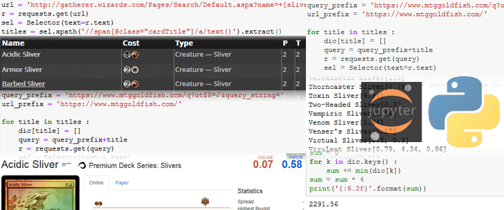

Asynchronous image viewer with Thumbnails (Vulkan)
This application obtains a list of images of most commonly used formats(.jpg, .bmp and .png) in a folder specified in source.cpp, using Win32 functions. It then, using multiple threads, loads and renders the images as smaller-sized thumbnails, allowing you to scroll through your folder. It can handle folders worth of several hundred images(potentially up to 4096 images, utilizing special extensions), with maximum size of up to 25 megapixels.
Business analytics: Lending Club open dataset, 2007-2011
Armed with Pandas, Numpy, Pyplot and Seaborn, I look into the activity of a lending company, to see if I could reason a little bit about how the business is across America and in individual states, and whether an imaginary reallocation of offices is would make business sense, constructing a PostgreSQL database in the process with the help of SQLAlchemy library.

"A Flappy Fish” (Vulkan)
This is a simple recreation of the popular “Flappy Bird” game, with the assets from “Super Mario Bros.”(© Nintendo)
Youtube playlist generation for a desktop media player
Using Youtube Data v3 and Google’s own authentication libraries, as well as a bit of regex, json and isodate I search through the “Geek and Sundry” channel, find Day[9]’s “Spellslingers” series’ playlist, extract and format it to fit my media player of choice.
Basic Vulkan Pipeline Demo
This is the “Black Triangle” of my recent Vulkan trip, and it took me a bit to remember how to even output a triangle. I decided to make this the last one, and cooked it to perfection, making it the basis of the framework in which I wrote the following two entries; trying out for the first time a memory management scheme of a humble, yet effective, memory pool into which all further geometry writes are written; matrix and vector math for affine transforms of geometry; and text overlay system allowing for convenient layout, for debugging purposes and others.
A price of MtG tribe’s card collection
Gently scraping two databases of Magic the Gathering cards with Requests and Scrapy, I first find out all the names of cards from a certain collection, and then how much a full set of them, four copies each, can cost.

Apple iTunes Subscription RSS Feed Podcast Downloader
In goes an .rss URL, out goes a folder full of .mp3 files. Simple as that. Starring: Requests, BeautifulSoup, ThreadPool.

Education and Experience
- Bauman’s Moscow State Technical University ('09-'11)
- Gameboloid (2015-2016)
- Worked on Woodland Quest, a Match-3 Game
- Integrated ad serving libraries
- Feature support and bug fixes
- Implemented UI elements
- Supplemental animations
- Russian Post (2016-2019)
- Side job while working on DataCamp and other self-training
- Data entry / database operations for package tracking
- Customer Service
- DataCamp courses (click for my completed courses)
- Pandas
- PostgreSQL
- SQLAlchemy
- Web Scraping